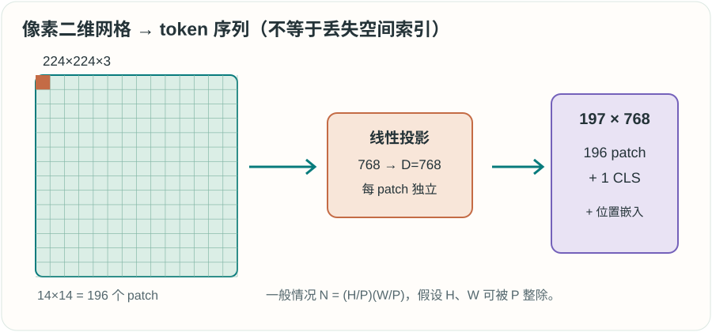
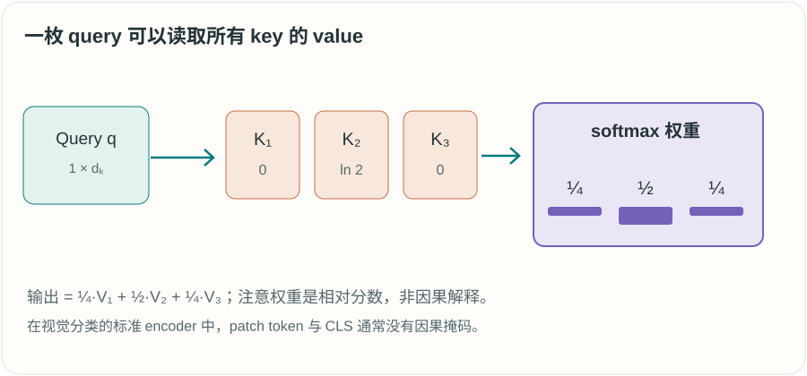
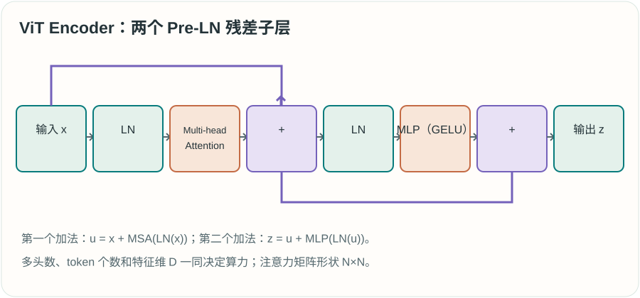

CHAPTER 11 · VISUAL TOKENS
Vision Transformer：图像怎样成为一串 token？
从 224×224 的网格开始，逐步看清 patch 投影、CLS 向量、行归一化注意力和两个残差子层，而不是把 ViT 画成一个黑盒。
为什么把图像切成 token？
卷积神经网络（CNN）把局部窗口作为核心先验：在不同空间位置复用卷积核。Vision Transformer（ViT）问的是：能否像处理文字 token 那样，把图像转成序列，再让位置间通过自注意力直接交互？ViT 的关键不是证明卷积无用，而是在足够规模的预训练数据和计算预算下考察另一种归纳偏置。
Dosovitskiy 等的 ViT 原论文于 2020 年提出，发表于 ICLR 2021。论文的强结果依赖于具体的大规模预训练、微调与评估条件；不应从中推出“任意小数据集从头训练 ViT 一定胜过 CNN”。

Patch embedding 的形状与参数
假设输入批次为 (B,3,224,224)，patch 大小 P=16、不重叠。每个 patch 的展平长度为 3×16×16=768，空间上有 196 个 patch。把每个 patch 乘同一个可学习投影矩阵，可以用 kernel=16、stride=16 的 Conv2d(3,D,16,16) 高效实现，再 reshape 为序列；这属于一次局部线性投影，不能因此说整套 ViT 完全不使用卷积算子。
假设输入高宽均可被 P 整除，H=W=224、P=16；原始 ViT-B/16 带 CLS token 后序列长为 197。
ViT-B/16 典型配置为 D=768、12 个 encoder blocks、12 个注意力头，MLP 中间宽度通常是 4D。CLS 是可学习向量，不是来自某块图像；可学习位置嵌入用于补充 token 的空间顺序。若改变输入分辨率，位置嵌入如何插值属于额外实现约定。
import torch
from torch import nn
x = torch.randn(2, 3, 224, 224)
proj = nn.Conv2d(3, 768, kernel_size=16, stride=16)
patches = proj(x).flatten(2).transpose(1, 2)
cls = torch.zeros(1, 1, 768).expand(2, -1, -1)
tokens = torch.cat((cls, patches), dim=1)
assert patches.shape == (2, 196, 768)
assert tokens.shape == (2, 197, 768)
print("tokens:", tuple(tokens.shape))自注意力到底混合了什么？
每个 token 各自生成 Query（查询）、Key（键）与 Value（值）向量。一个 query 与所有 key 的相似分数经尺度缩放，再沿 key 的维度 softmax；结果是一行非负且总和为 1 的权重，用于加权汇总所有 value。多头注意力将 D 维拆成多个子空间分别计算，最后拼接并投影回 D 维。
单个 head：Q,K 形状 N×d_k，V 为 N×d_v，注意力权重是 N×N；softmax 对每行的 key 维计算。

标准分类 encoder 通常不使用语言生成中的因果遮罩（causal mask）。注意力权重可视化有帮助，但并不能单凭一张 attention map 就证明模型作出决策的因果依据。
import torch
scores = torch.tensor([[1.0, 2.0, 1.0]]).log()
weights = scores.softmax(dim=-1)
values = torch.tensor([[1.0], [2.0], [4.0]])
answer = weights @ values
assert weights.shape == (1, 3)
assert torch.allclose(weights.sum(dim=-1), torch.ones(1))
# log([1,2,1]) gives [0, ln2, 0], weights = [1/4,1/2,1/4]
assert torch.allclose(answer, torch.tensor([[2.25]]), atol=1e-6)
print("weighted value:", answer.item())Transformer block 的残差路径与计算复杂度
原始 ViT encoder 使用 pre-normalization：u = x + MSA(LN(x))，然后 z = u + MLP(LN(u))。LayerNorm 沿每个 token 的通道维归一化，而不是沿 token 序列把所有空间位置混在一起。MLP 通常包含两个线性层和 GELU。若把残差连接画成串行 LN→attention→MLP 而没有两次加法，会误导反向梯度路径。

对长度为 N 的序列，显式 attention 分数矩阵每个 head 大小为 N×N，显存与这部分运算有二次增长趋势。但整层还有 QKV 投影和 FFN 的通道相关成本，因此不能说整个 ViT 的总成本只等于 O(N²)。现代优化实现也可能在不显式保存完整 N×N 矩阵的情况下完成相同注意力计算。
ViT 与 CNN 各自擅长什么？
CNN 的局部连接与权重共享为高效提取局部结构提供了强先验，而 ViT 显式允许 patch 间建立全局交互。这不等于 CNN 不拥有全局理论感受野，也不等于 ViT 在小数据上无条件更优秀。ViT 的训练配方、数据增强、预训练数据规模、分辨率、token 数量和计算预算会显著影响结果。
位置编码、CLS pooling、相对位置偏置、蒸馏 token、分层注意力等均有不同变体；本页公式专指原始 ViT 的基本 encoder，不代表 Swin、DeiT 或后续模型的完整结构。完整复现实验需要报告权重来源、数据集授权、训练步数、测试裁剪与随机性。
检查理解：224×224 输入改成 patch=8，会如何改变注意力矩阵？
patch 数由 196 增至 784；若保留 CLS，序列长从 197 变为 785。单个 head 的显式注意力矩阵由 197² 变为 785²，元素数大约增至原来的 15.9 倍。
原论文与接口
图解、玩具权重和张量值均为教学重构；性能结论只在明确的预训练和评估协议下可比较。